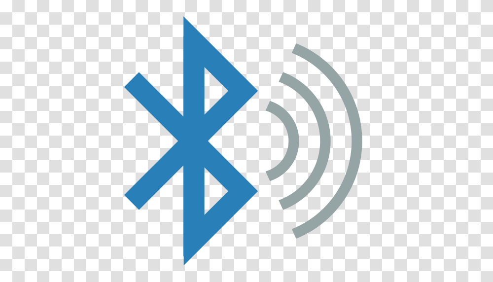

Breve história do Bluetooth
A história do Bluetooth começa em 1994. Naquele ano, a Ericsson estudava o desenvolvimento de uma tecnologia capaz de permitir a comunicação entre telefones celulares e acessórios utilizando sinais de rádio de baixo custo em vez dos tradicionais cabos. O estudo foi feito com base em um projeto que investigava o uso de mecanismos de comunicação em redes de telefones celulares, trabalho que resultou em um sistema de rádio de curto alcance que recebeu o nome MC-Link. Com a evolução do projeto, a Ericsson percebeu que o MC-Link poderia ser um sucesso: seu principal atrativo era a implementação relativamente fácil e barata. Em 1997, o projeto começou a despertar o interesse de outras empresas que, logo, passaram a fornecer apoio. Por conta disso, em 1998, foi criado o consórcio Bluetooth SIG (Bluetooth Special Interest Group), formado pelas companhias Ericsson, Intel, IBM, Toshiba e Nokia (dezenas de outras companhias aderiram ao consórcio com o passar do tempo). Repare que o grupo envolvia inicialmente duas "gigantes" das telecomunicações (Ericsson e Nokia), dois nomes de peso na fabricação de PCs (IBM e Toshiba) e a líder no desenvolvimento de chips e processadores (Intel). Tamanha diversidade foi importante para permitir o desenvolvimento de padrões que garantissem o uso e a interoperabilidade da tecnologia nos mais variados dispositivos. A partir daí, o Bluetooth começou a virar realidade, começando pela adoção desse nome. A denominação Bluetooth é uma homenagem a um rei dinamarquês chamado Harald Blåtand, mais conhecido como Harald Bluetooth (Haroldo Dente-Azul). Um de seus grandes feitos foi a unificação da Dinamarca e da Noruega, e é em alusão a esse fato que o nome Bluetooth foi escolhido, como que para dizer que a tecnologia proporciona a unificação de variados dispositivos. Não por acaso, o logotipo da tecnologia Bluetooth consiste na junção de dois símbolos nórdicos que correspondem às iniciais do monarca.
O que é Bluetooth?
O Bluetooth é um protocolo de comunicação, projetado originalmente para curto alcance e baixo consumo de energia, que permite dois dispositivos trocarem informações entre si sem cabos. O Bluetooth utiliza um frequência de rádio específica que permite às duas pontas se identificarem e se conectarem. O nome “Bluetooth” é uma alusão a Haroldo I, rei da Dinamarca e Noruega no fim do século X, cujo epíteto era “o Dente-Azul“, acredita-se, por causa de um dente podre; já o símbolo é a união das runas escandinavas A justificativa, segundo Jim Kardach da Intel, é que Haroldo I unificou os povos escandinavos, da mesma forma que a tecnologia pretendia fazer com dispositivos.